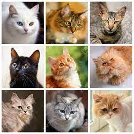

The company was founded 20 years ago, and it is a café whose goal to create quality
and handcrafted beverages as well give customers the opportunity
to meet and engage with local cats ready for adoption.
We are partnered with the local Humane Society to rehome cats in need and offer
the attention and exercise that cats need while waiting to find their forever home.
cafés have been around as early as 1998 in Taipei but really came to popularityin Japan where many different anime themed cafés are now running such as owl cafés.
